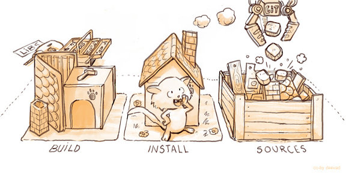

(Ref: http://blog.openhatch.org/tag/newsletter/)
Larry Wall（Perl 之父）曾說過，程式設計師有三大美德： 「懶惰」、「不耐煩」、以及「傲慢」。所以如果你想要成為偉大的程式設計師，你一定要懂得「偷懶」！在每天的軟體開發中，版本控制系統（Version control systems ）是必備的工具（如：Git、Mercurial），想想，若是我們可以省下跟那些工具打交道的時間，就可以擁有更多時間來寫 code，就更有可能改變世界。因此，本文將以 Git 為例，教你如何讓 Git 操作起來更簡潔，讓你可以更懶。
觀念
通常改善工作流程，可以有幾個技巧：減少重複、加速、自動化。
減少重複
首先，你必須檢視自己使用 Git 的流程，試著執行
history | grep git
1
history | grep git
看看你都下了哪些 Git 指令，其中是否有重複的工作，是不是經常執行一系列的指令來達到某個目的，如果是的話，那你就可以考慮創建一個巨集指令，一次完成所有工作，就像寫程式一樣，發現有重複的 code，你可以使用 Extract Method 的重構技巧，將他們抽出成一個單獨的方法，下次就可以直接呼叫。
加速
同樣做一件事，但想辦法讓他更快，用最少的敲擊鍵盤數來完成同樣的指令，例如某些指令你常常打，那麼就可以創建一些 alias 讓指令變短，就像 huffman coding 一樣，使用頻率越高的指令應該要越短。
自動化
有些事不一定要手動去做，Git 可以設定 hook，當某些事件發生時，自動去做一些事，除了省事也更可靠，你不用擔心自己忘記執行。
具體的作法
接下來，我會介紹一些具體方法及實例來說明。
0. RTFM (Read The F***ing Manual)
每一個 Git command 都有一堆參數可以設定，讀一下 help 看看這個 command 本身可以作到哪些事情，搞不好會發現以往的作法其實是繞路，有更直接的作法只是你不知道而已。同樣的，做任何事情都一樣，看看有沒有現成的東西可以使用，重複打造輪子並不是笨蛋，至少你會學會如何打造輪子，但這浪費了時間，那些原本可以拿去做更偉大事情的時間。
如果你會用到 github 的話，可以裝一下 hub，他延伸了原本的 Git command，讓 github 的操作更簡單。
1. Alias（加速）
這招最簡單，如果你常常打一些指令，考慮弄個 alias 吧。
$ git config --global alias.co checkout
$ git config --global alias.br branch
$ git config --global alias.ci commit
$ git config --global alias.st status
1234
$ git config --global alias.co checkout$ git config --global alias.br branch$ git config --global alias.ci commit$ git config --global alias.st status
這相當於直接在 .gitconfig 裡加入：
[alias]
co = checkout
br = branch
ci = commit
st = status
12345
[alias] co = checkout br = branch ci = commit st = status
設定之後，你就可以用 git co 來取代 git checkout，有沒有，一下就省了很多個鍵。再來你可以把參數一起放進去，像是：
[alias]
lo = log --oneline
12
[alias] lo = log --oneline
我個人覺得 git log 很佔空間，就會用 git lo 讓他顯示一行版本的 log。
再來更進階的，你可以把 command alias 成某個 shell function，如此一來除了更 powerful，還可以利用 positional parameters，例如以下，我就可以用 git files <SHA> 得到某個 commit 中修改了哪些檔案。
[alias]
files = "!f() { git diff --name-status $1^ $1; }; f"
12
[alias] files = "!f() { git diff --name-status $1^ $1; }; f"
如果你是 alias 的愛好者，而你使用的 shell 也支援 alias （ex：bash），我看過更懶的人在他們的 shell 中設了像這樣的東西：
alias gs='git status'
alias ga='git add'
alias gb='git branch'
alias gc='git commit'
alias gd='git diff'
alias go='git checkout'
123456
alias gs='git status'alias ga='git add'alias gb='git branch'alias gc='git commit'alias gd='git diff'alias go='git checkout'
以及打錯字的修正…
alias got='git'
alias get='git'
12
alias got='git'alias get='git'
2. Custom Commands（減少重複）
在 Git 中你可以創造自己的 command，之後就可以透過以下方式執行：
$ git my-command
1
$ git my-command
新增一個自訂 command 十分地簡單，只需要：
- 建立一個新檔案，並取名為 git-my-command ，也就是你想要的指令名稱加上 git- 字首，注意沒有副檔名。
- 你可以用任何語言寫，Bash、Python、Ruby、…都可以，然後把檔案設為可執行。
- 確認檔案的位置有在 $PATH 中。
如此，你幾乎可以寫一個 Git command，做任何你想要的事情。接下來，我們來做一個很小的東西。
需求
當我們開發新功能時，根據 Git 的特性，大部分的人會開一個新 branch 出來，然後開始一系列的編輯與 commit，假設這時我們想整個瀏覽一下在 local 端我們增加了哪些 commit，可以下 git log，但是 git log 的結果會是一長串的 commit，很多是本來就在 upstream 上的，是不是可以跳過那些，只顯示我們在這 branch 上新增的 commit 呢？
PS：首先你的 branch 必須要設好 upstream，可以用 git branch -u <upstream> 設定，不過這不是重點，細節部份請自己查一下。
解法
我們打算建立一個 custom command：git mylog [<branch>] 來達到這個目的，大致作法如下：
- 取出 的 upstream。
- 計算 與 upstream 的 common ancestor。
- 列出 上在 common ancestor 之後到 HEAD 的所有 commit。
動工，以 bash 實作如下：
#!/bin/bash
if [ "$1" == "" ]; then
branch=HEAD
else
branch=$1
fi
upstream=git rev-parse --symbolic-full-name ${branch}@{u}
ancestor=git merge-base ${upstream} ${branch}
git log --oneline ${ancestor}..${branch}
echo "..The following are the commits on upstream.."
123456789101112
#!/bin/bash if [ "$1" == "" ]; then branch=HEADelse branch=$1fi upstream=git rev-parse --symbolic-full-name ${branch}@{u}ancestor=git merge-base ${upstream} ${branch}git log --oneline ${ancestor}..${branch}echo "..The following are the commits on upstream.."
以上只是一個簡單的例子，可以參考看看大家都做了哪些 custom commands：
3. Hooks（自動化）
Git 和其他版本控制系統一樣，可以在某些重要事件發生時，自動觸發自訂腳本。他分為用戶端和伺服器端，這邊我們會說明如何使用用戶端 hooks 來自動化工作流程。
在每個 Git repository 中都有一個 .git/hooks 目錄，裡面的內容大概像這樣：
applypatch-msg.sample pre-applypatch.sample pre-push.sample
commit-msg.sample pre-commit.sample pre-rebase.sample
post-update.sample prepare-commit-msg.sample update.sample
123
applypatch-msg.sample pre-applypatch.sample pre-push.samplecommit-msg.sample pre-commit.sample pre-rebase.samplepost-update.sample prepare-commit-msg.sample update.sample
這是 Git 提供給我們的 sample script，讓我們參考用的，script 的檔名就是對應的事件，這邊有一份完整可以使用的事件 list。
如果我們想要安裝一個 hook，在每次 commit 前讓他自動執行某個腳本，就在這個目錄中，新增一個名為 pre-commit 的 script file（注意沒有副檔名，檔案要設為可執行），這樣在 commit 前就會自動執行這個腳本。
pre-commit 大概是最多人使用的 hook，他可以讓我們在 commit 前對我們的修正做些檢查，例如用 linting tool （ex：jshint）掃過，以便確保程式的品質。可以參考看看大家都怎麼使用 hooks：
- Git Hooks：Projects
再來做一個小玩具吧。
需求
在 gecko 中，每個 interface（寫在 .idl 中）都會有一個編號 uuid，這可以當作該 interface 的版本號或是 signature，當 uuid 一樣時，我們就認為 interface 是沒有改變的，這提供一個機制確保 interface 與其 user 是 binary compatible 的，因此當我們修改 interface 的內容時，修改對應的 uuid 就很重要，但是有時候我們會忘記，所以是不是能有一個自動的檢查，在每次 commit 時都幫我們看看，如果 interface 有改，uuid 是不是也有跟著改。
解法
考量到 idl 的 parsing 是很複雜的，所以在這個例子中，我們在只做粗略的檢查：如果 idl file 有修改，那麼這個檔案裡的 uuid 必須也有修改。實際上每個 .idl 中可能有多個 interface，我們要確定有改動的 interface 其對應的 uuid 是有改的，甚至其他受影響的也要。不過我們先弄個簡單版，幫助我們抓出粗心忘記改的錯誤，步驟如下：
- 檢查此次 commit 的所有檔名，看其中是否有 .idl 。
- 若有，取得此檔案的 HEAD version （此次 commit 前版本）與 staged version（此次 commit 後版本）。
- 取出此兩版中的所有 uuid 形成兩個 sets。
- 比較這兩個 set 是否一致，若一致，就表示 uuid 沒改，這是錯誤的，return non-zero 中斷 commit。
這次用 python 來寫，大致如下：
#!/usr/bin/env python
import re
import subprocess
import sys
def system(*args, kwargs):
kwargs.setdefault('stdout', subprocess.PIPE)
proc = subprocess.Popen(args, kwargs)
out, err = proc.communicate()
return out
def getModifiedFiles():
result = system('git', 'diff', '--cached', '--diff-filter=M', '--name-status')
# M file1
# M file2
# ....
files = map(lambda x: x.split()[1], result.splitlines())
return files
def getModifiedIDL():
return filter(lambda x: x.endswith('.idl'), getModifiedFiles())
def getFileContent(version, path):
return system('git', 'cat-file', '-p', version + ":" + path)
def getUUIDSet(content):
# 38a51e14-1e1e-40e8-860a-92f03c501842
pattern = re.compile('uuid\((\w{8}-\w{4}-\w{4}-\w{4}-\w{12})\)')
return pattern.findall(content)
def main():
for idl in getModifiedIDL():
oldUUIDs = getUUIDSet(getFileContent("HEAD", idl))
newUUIDs = getUUIDSet(getFileContent("", idl))
if set(oldUUIDs) == set(newUUIDs):
print "uuid in %s is not changed" % idl
sys.exit(1)
if __name__ == '__main__':
main()
123456789101112131415161718192021222324252627282930313233343536373839404142
#!/usr/bin/env python import reimport subprocessimport sys def system(*args, kwargs): kwargs.setdefault('stdout', subprocess.PIPE) proc = subprocess.Popen(args, kwargs) out, err = proc.communicate() return out def getModifiedFiles(): result = system('git', 'diff', '--cached', '--diff-filter=M', '--name-status') # M file1 # M file2 # .... files = map(lambda x: x.split()[1], result.splitlines()) return files def getModifiedIDL(): return filter(lambda x: x.endswith('.idl'), getModifiedFiles()) def getFileContent(version, path): return system('git', 'cat-file', '-p', version + ":" + path) def getUUIDSet(content): # 38a51e14-1e1e-40e8-860a-92f03c501842 pattern = re.compile('uuid\((\w{8}-\w{4}-\w{4}-\w{4}-\w{12})\)') return pattern.findall(content) def main(): for idl in getModifiedIDL(): oldUUIDs = getUUIDSet(getFileContent("HEAD", idl)) newUUIDs = getUUIDSet(getFileContent("", idl)) if set(oldUUIDs) == set(newUUIDs): print "uuid in %s is not changed" % idl sys.exit(1) if __name__ == '__main__': main()
結論
程式設計師最酷的地方就是，他可以透過寫程式，來提昇自己下次寫程式的速度，很多我們平常習以為常的地方，都有著改善加速的機會。在本文中，我們透過 Git alias、以及撰寫 Git custom commands、Git hooks，讓軟體開發的流程更順暢、更有生產力。